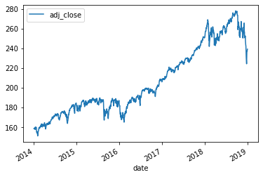

from IPython.display import Image
Image("not_ethical.png")1 Python Jumpstart
The purpose of this tutorial is to introduce Jupyter Notebook files, and to give a glimpse of how to use them to work with financial data.
In particular, we will visualize stock index data to observe the leverage effect: when the market suffers losses, prices become more volatile.
1.1 What is a Notebook?
This file - the one you are currently interacting with - is a Jupyter Notebook.
The notebook format conveniently allows you to combine words/sentences, computer code, code output (including plots), and mathematical notation. Notebooks have proven to be a convenient and productive programming environment for data analysis.
For those of you familiar with R, a Jupyter Notebook is similar in functionality to R Markdown notebooks.
Behind the scenes of a Jupyter Notebook is a kernel that is responsible for executing computations. The kernel can live locally on your machine or on a remote server.
1.2 Code Cells
A notebook is structured as a sequence of cells. There are two kinds of cells: 1) code cells that contain code; 2) markdown cells which contain markdown or latex.
The cell below is a code cell - try typing the code that is commented out and the press shift + enter.
1.3 Edit Mode vs Command Mode
There are two modes in a notebook: 1) edit mode; 2) command mode.
In edit mode you are inside a cell and you can edit the contents of the cell.
In command mode, you are outside the cells and you can navigate between them.
1.4 Keyboard Shortcuts
Here are some of my favorite keyboard shortcuts:
edit mode: enter
command mode: esc
navigate up: k
navigate down: j
insert cell above: a
insert cell below: b
delete cell: d, d (press d twice)
switch to code cell: y
switch to markup cell: m
execute and stay on current cell: ctrl + enter
execute and move down a cell: shift + enter
1.6 Importing Packages
The power and convenience of Python as a data analysis tool comes from the ecosystem of freely available third party packages.
Here are the packages that we will be using in this tutorial:
numpy - efficient vector and matrix computations
pandas - working with DataFrames
pandas_datareader - reading data from Yahoo Finance
The following code imports these packages and assigns them each an alias.
import numpy as np
import pandas as pd
import pandas_datareader as pdr1.7 Reading-In Stock Data into a DataFrame
Let’s begin by reading in 5 years of SPY price data from Yahoo Finance.
SPY is an ETF that tracks the performace of the SP500 stock index.
df_spy = pdr.get_data_yahoo('SPY', start='2014-01-01', end='2019-01-01')
df_spy = df_spy.round(2)
df_spy.head()| High | Low | Open | Close | Volume | Adj Close | |
|---|---|---|---|---|---|---|
| Date | ||||||
| 2014-01-02 | 184.07 | 182.48 | 183.98 | 182.92 | 119636900.0 | 158.56 |
| 2014-01-03 | 183.60 | 182.63 | 183.23 | 182.89 | 81390600.0 | 158.54 |
| 2014-01-06 | 183.56 | 182.08 | 183.49 | 182.36 | 108028200.0 | 158.08 |
| 2014-01-07 | 183.79 | 182.95 | 183.09 | 183.48 | 86144200.0 | 159.05 |
| 2014-01-08 | 183.83 | 182.89 | 183.45 | 183.52 | 96582300.0 | 159.08 |
Our stock data now lives in the variable called df_spy, which is a pandas data structure known as a DataFrame. We can see this by using the following code:
type(df_spy)pandas.core.frame.DataFrame1.8 DataFrame Index
In pandas, a DataFrame always has an index. For df_spy the Dates form the index.
df_spy.indexDatetimeIndex(['2014-01-02', '2014-01-03', '2014-01-06', '2014-01-07',
'2014-01-08', '2014-01-09', '2014-01-10', '2014-01-13',
'2014-01-14', '2014-01-15',
...
'2018-12-17', '2018-12-18', '2018-12-19', '2018-12-20',
'2018-12-21', '2018-12-24', '2018-12-26', '2018-12-27',
'2018-12-28', '2018-12-31'],
dtype='datetime64[ns]', name='Date', length=1258, freq=None)I don’t use indices very much, so let’s make the Date index just a regular column. Notice that we can modify DataFrames inplace.
df_spy.reset_index(inplace=True)
df_spy| Date | High | Low | Open | Close | Volume | Adj Close | |
|---|---|---|---|---|---|---|---|
| 0 | 2014-01-02 | 184.07 | 182.48 | 183.98 | 182.92 | 119636900.0 | 158.56 |
| 1 | 2014-01-03 | 183.60 | 182.63 | 183.23 | 182.89 | 81390600.0 | 158.54 |
| 2 | 2014-01-06 | 183.56 | 182.08 | 183.49 | 182.36 | 108028200.0 | 158.08 |
| 3 | 2014-01-07 | 183.79 | 182.95 | 183.09 | 183.48 | 86144200.0 | 159.05 |
| 4 | 2014-01-08 | 183.83 | 182.89 | 183.45 | 183.52 | 96582300.0 | 159.08 |
| ... | ... | ... | ... | ... | ... | ... | ... |
| 1253 | 2018-12-24 | 240.84 | 234.27 | 239.04 | 234.34 | 147311600.0 | 224.30 |
| 1254 | 2018-12-26 | 246.18 | 233.76 | 235.97 | 246.18 | 218485400.0 | 235.63 |
| 1255 | 2018-12-27 | 248.29 | 238.96 | 242.57 | 248.07 | 186267300.0 | 237.44 |
| 1256 | 2018-12-28 | 251.40 | 246.45 | 249.58 | 247.75 | 153100200.0 | 237.13 |
| 1257 | 2018-12-31 | 250.19 | 247.47 | 249.56 | 249.92 | 144299400.0 | 239.21 |
1258 rows × 7 columns
Notice that df_spy still has an index, now it’s just a sequence of integers.
df_spy.indexRangeIndex(start=0, stop=1258, step=1)1.9 A Bit of Cleaning
As a matter of preference, I like to make my column names snake case.
df_spy.columns = df_spy.columns.str.lower().str.replace(' ','_')
df_spy.head()| date | high | low | open | close | volume | adj_close | |
|---|---|---|---|---|---|---|---|
| 0 | 2014-01-02 | 184.07 | 182.48 | 183.98 | 182.92 | 119636900.0 | 158.56 |
| 1 | 2014-01-03 | 183.60 | 182.63 | 183.23 | 182.89 | 81390600.0 | 158.54 |
| 2 | 2014-01-06 | 183.56 | 182.08 | 183.49 | 182.36 | 108028200.0 | 158.08 |
| 3 | 2014-01-07 | 183.79 | 182.95 | 183.09 | 183.48 | 86144200.0 | 159.05 |
| 4 | 2014-01-08 | 183.83 | 182.89 | 183.45 | 183.52 | 96582300.0 | 159.08 |
Let’s also remove the columns that we won’t need. We first create a list of the column names that we want to get rid of and then we use the DataFrame.drop() method.
lst_cols = ['high', 'low', 'open', 'close', 'volume',]
df_spy.drop(columns=lst_cols, inplace=True)
df_spy.head()| date | adj_close | |
|---|---|---|
| 0 | 2014-01-02 | 158.56 |
| 1 | 2014-01-03 | 158.54 |
| 2 | 2014-01-06 | 158.08 |
| 3 | 2014-01-07 | 159.05 |
| 4 | 2014-01-08 | 159.08 |
Notice that trailing commas are not an issue in Python.
1.10 Series
You can isolate the columns of a DataFrame with square brackets as follows:
df_spy['adj_close']0 158.56
1 158.54
2 158.08
3 159.05
4 159.08
...
1253 224.30
1254 235.63
1255 237.44
1256 237.13
1257 239.21
Name: adj_close, Length: 1258, dtype: float64The columns of a DataFrame are a pandas data structure called a Series.
type(df_spy['adj_close'])pandas.core.series.Series1.11 numpy and ndarrays
Python is a general purpose programming language and was not created for scientific computing in particular. One of the foundational packages that makes Python well suited to scientific computing is numpy, which has a variety of features including a data type called ndarrays. One of the benefits of ndarrays is that they allow for efficient vector and matrix computation.
The values of a Series object is a numpy.ndarray. This is one sense in which pandas is built on top of numpy.
df_spy['adj_close'].valuesarray([158.56, 158.54, 158.08, ..., 237.44, 237.13, 239.21])type(df_spy['adj_close'].values)numpy.ndarray1.12 Series Built-In Methods
Series have a variety of built-in methods that provide convenient summarization and modification functionality. For example, you can .sum() all the elements of the Series.
df_spy['adj_close'].sum()259032.07Next, we calculate the standard deviation of all the elements of the Series.
df_spy['adj_close'].std()34.188328034526734The .shift() built-in method will be useful for calculating returns in the next section.
df_spy['adj_close'].shift()0 NaN
1 158.56
2 158.54
3 158.08
4 159.05
...
1253 230.39
1254 224.30
1255 235.63
1256 237.44
1257 237.13
Name: adj_close, Length: 1258, dtype: float641.13 Calculating Daily Returns
Our analysis analysis of the leverage effect will involve daily returns for all the days in df_spy. Let’s calculate those now.
Recall that the end-of-day day \(t\) return of a stock is defined as: \(r_{t} = \frac{S_{t}}{S_{t-1}} - 1\), where \(S_{t}\) is the stock price at end-of-day \(t\).
Here is a vectorized approach to calculating all the daily returns in a single line of code.
df_spy['ret'] = df_spy['adj_close'] / df_spy['adj_close'].shift(1) - 1
df_spy.head()| date | adj_close | ret | |
|---|---|---|---|
| 0 | 2014-01-02 | 158.56 | NaN |
| 1 | 2014-01-03 | 158.54 | -0.000126 |
| 2 | 2014-01-06 | 158.08 | -0.002901 |
| 3 | 2014-01-07 | 159.05 | 0.006136 |
| 4 | 2014-01-08 | 159.08 | 0.000189 |
Notice that we can create a new column of a DataFrame by using variable assignment syntax.
1.14 Visualizing Adjusted Close Prices
Python has a variety of packages that can be used for visualization. For this tutorial, we will focus on built-in plotting capabilities of pandas. These capabilities are built on top of the matplotlib package, which is the foundation of much of Python’s visualization ecosystem.
DataFrames have a built-in .plot() method that makes creating simple line graphs quite easy.
df_spy.plot(x='date', y='adj_close');
If we wanted to make this graph more presentable we could do something like:
ax = df_spy.\
plot(
x = 'date',
y = 'adj_close',
title = 'SPY: 2014-2018',
grid = True,
style = 'k',
alpha = 0.75,
figsize = (9, 4),
);
ax.set_xlabel('Trade Date');
ax.set_ylabel('Close Price');Notice that the ax variable created above is a matplotlib object.
type(ax)matplotlib.axes._subplots.AxesSubplot1.15 Visualizing Returns
Pandas also gives us the ability to simultaneously plot two different columns of a DataFrame in separate subplots of a single graph. Here is what that code looks like:
df_spy.plot(x='date', y=['adj_close', 'ret',], subplots=True, style='k', alpha=0.75, figsize=(9, 8), grid=True);The returns graph above is a bit of a hack, but it’s used all the time in finance to demonstrate volatility clustering.
Notice that whenever there is a sharp drop in the adj_close price graph, that the magnitude of the nearby returns becomes large. In contrast, during periods of steady growth (e.g. all of 2017) the magnitude of the returns is small.
1.16 Calculating Realized Volatility
Realized volatility is defined as the standard deviation of the daily returns; it indicates how much variability in the stock price there has been. It is a matter of convention to annualize this quantity, so we multiply it by \(\sqrt{252}\).
The following vectorized code calculates a rolling 2-month volatility for our SPY price data.
df_spy['ret'].rolling(42).std() * np.sqrt(252)0 NaN
1 NaN
2 NaN
3 NaN
4 NaN
...
1253 0.226709
1254 0.252811
1255 0.249180
1256 0.245997
1257 0.247003
Name: ret, Length: 1258, dtype: float64Let’s add these realized volatility calculations todf_spy this with the following code:
df_spy['realized_vol'] = df_spy['ret'].rolling(42).std() * np.sqrt(252)
df_spy| date | adj_close | ret | realized_vol | |
|---|---|---|---|---|
| 0 | 2014-01-02 | 158.56 | NaN | NaN |
| 1 | 2014-01-03 | 158.54 | -0.000126 | NaN |
| 2 | 2014-01-06 | 158.08 | -0.002901 | NaN |
| 3 | 2014-01-07 | 159.05 | 0.006136 | NaN |
| 4 | 2014-01-08 | 159.08 | 0.000189 | NaN |
| ... | ... | ... | ... | ... |
| 1253 | 2018-12-24 | 224.30 | -0.026433 | 0.226709 |
| 1254 | 2018-12-26 | 235.63 | 0.050513 | 0.252811 |
| 1255 | 2018-12-27 | 237.44 | 0.007682 | 0.249180 |
| 1256 | 2018-12-28 | 237.13 | -0.001306 | 0.245997 |
| 1257 | 2018-12-31 | 239.21 | 0.008772 | 0.247003 |
1258 rows × 4 columns
1.17 Visualizing Realized Volatility
We can easily add realized_vol to our graph with the following code:
df_spy.plot(x = 'date',
y = ['adj_close','ret','realized_vol',],
subplots=True, style='k', alpha=0.75,
figsize=(9, 12),
grid=True);This graph is an excellent illustration of the leverage effect. When SPY suffers losses, there is a spike in realized volatility, which is to say that the magnitude of the nearby returns increases.
1.18 Further Reading
Python Data Science Handbook - Jake VanderPlas
Python for Finance - Yves Hilpisch
Python for Data Analysis - Wes McKinney
Automate the Boring Stuff - Al Sweigert